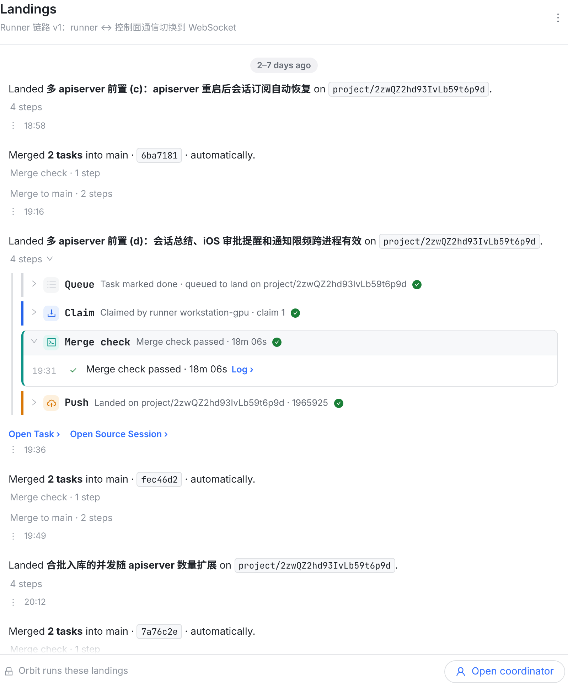
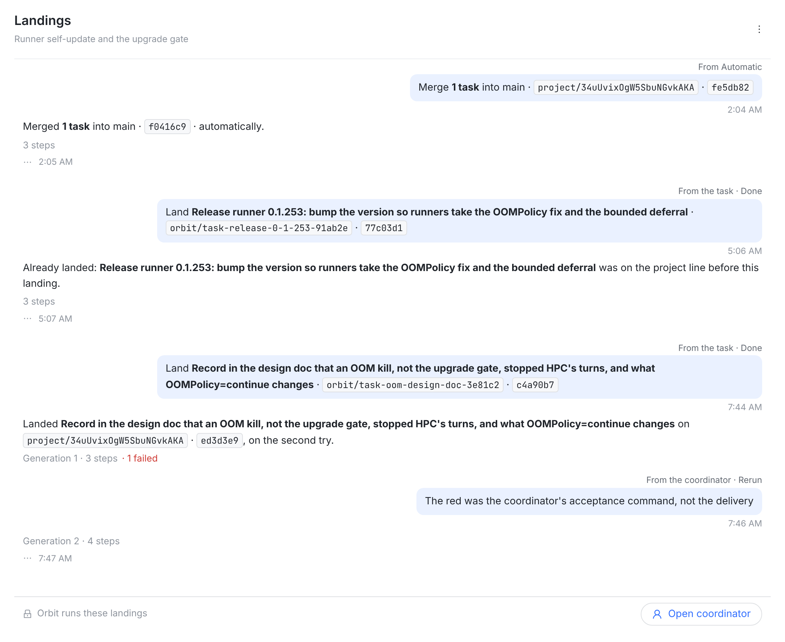
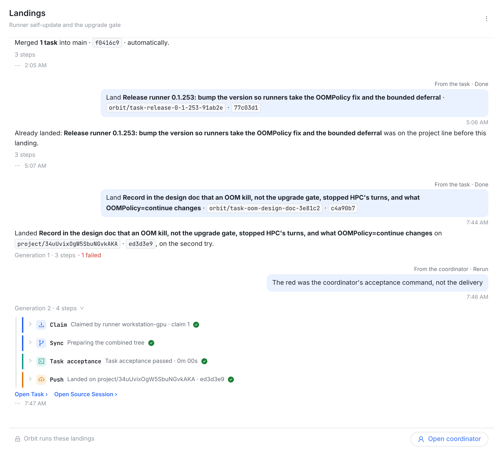
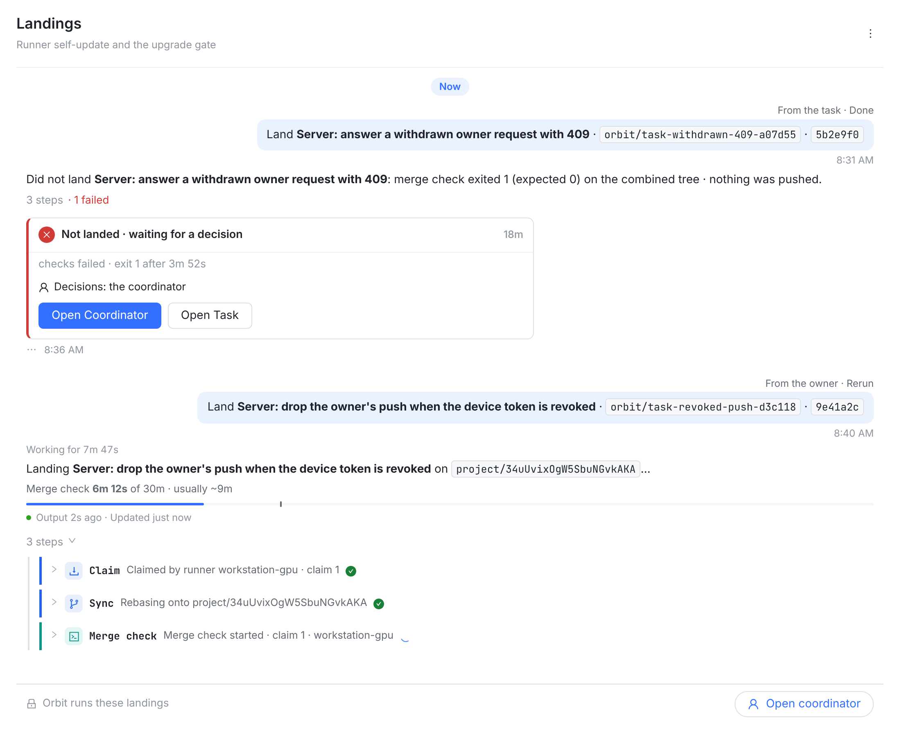

owner 11-11：「补充开始 land 之前的触发提交」→「按推荐的来，先出设计图」。
会话里一个回合从一条用户消息开始（谁说的写在气泡上方一行灰字，例如 From Feishu · 名字），然后是回复和工具调用。一次落地也照这个来：开头一个用户气泡说「谁交来了什么」——任务、它的分支、它的提交——然后是结论句、步骤、回合脚。原来 Queue 这一步写的就是触发（Task marked done · queued…、Rerun by…、Confirmed by Automatic），所以去掉 Queue 步骤，步骤从 Claim 开始，同一句话不说两遍。帧是真实控制台截图（会话页 + 会话自己的 chat-user-wrap / chat-user-from / chat-user）。




| 触发 | 气泡上方（谁） | 气泡（交来了什么） | 数据从哪来 |
|---|---|---|---|
| 任务做完 | From the task · Done | Land 任务名 · orbit/task-… · 提交 | 任务的交付分支、交付提交（deliveredBranch / deliveredSha） |
| 重跑 | From the coordinator · Rerun / From the owner · Rerun | 它给的理由；没有理由时同「任务做完」那句 | 重跑记录的发起人和理由 |
| 合入 main | From Automatic / From you | Merge N tasks into main · project/… · 提交 | 合并轮的任务数、源分支和提交、谁确认 |
| 项目开始集成 | From Orbit | Land 任务名 · the project started integrating | 入队原因 BACKFILL |
| 工作落在别的分支 | From Orbit | Land 任务名 · the task's work ended on another branch | 入队原因 BEHIND_WORK |
要做的（按你说的推荐方案）：
trigger：原因（交付 / 重跑 / 合并确认 / 补集成 / 落在别的分支）、谁（任务、协调者、owner、Automatic、Orbit）、源分支、源提交、来源 session、理由、时刻。三端都直接读，不再各自去读任务。看过没问题我就开始改：先服务端字段 + web，测试通过再合入。